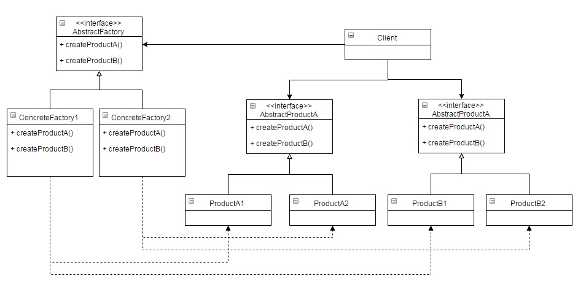

Abstract Factory Pattern by Juicyroach
Posted on JUN 13, 2015 at 10:30 PM

● 目地 : 創造一個「建立物件」的界面，讓使用者直接向他拿取實體(的介面)
● 使用時機 : 當有多個Factory想共存時
● 想法 : 若能有一個統一的Factory介面來控管多個Factory Method 這樣在程式的抽換和使用上會更為清楚
● UML :
● 程式與解說 :
個人覺得Abstract Factory Pattern其實就是多個Factory Method Pattern的組合，讓各個工廠不會發散掉。
因此我們會需要一個抽象的工廠，定義了相似工廠的動作
public interface AbstractFactory {
public Cup createMug();
public Cup createCoffeeCup();
}
接著是不同的工廠
public class FactoryA implements AbstractFactory {
@Override
public Cup createMug() {
return new MugA();
}
@Override
public Cup createCoffeeCup() {
return new CoffeeCupA();
}
}
public class FactoryB implements AbstractFactory {
@Override
public Cup createMug() {
return new MugB();
}
@Override
public Cup createCoffeeCup() {
return new CoffeeCupB();
}
}
可以看得出來，這兩個工廠都是負責生產相同的產品(介面)Cup，所以被生產的產品應該如下(B也相同!)
public interface Cup {
public void fill();
public void drink();
}
public class CoffeeCupA implements Cup {
@Override
public void fill() {
System.out.println("fill something into coffee cup");
}
@Override
public void drink() {
System.out.println("drink by the coffee cup");
}
}
public class MugA implements Cup {
@Override
public void fill() {
System.out.println("fill something into mug");
}
@Override
public void drink() {
System.out.println("drink by the mug");
}
}
最後，對Client來說，根本不需要知道工廠的實體，也不需要產品的實體，都只拿到介面即可(這邊仍用new來產生，但其實可以外面給予介面)
public class Client {
public static void main(String[] args) {
AbstractFactory factoryA = new FactoryA();
Cup cupA1 = factoryA.createMug();
Cup cupA2 = factoryA.createCoffeeCup();
AbstractFactory factoryB = new FactoryA();
Cup cupB1 = factoryB.createMug();
Cup cupB2 = factoryB.createCoffeeCup();
}
}